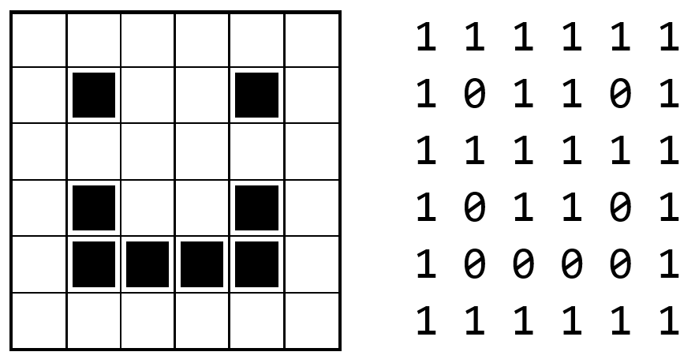
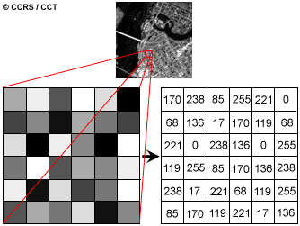
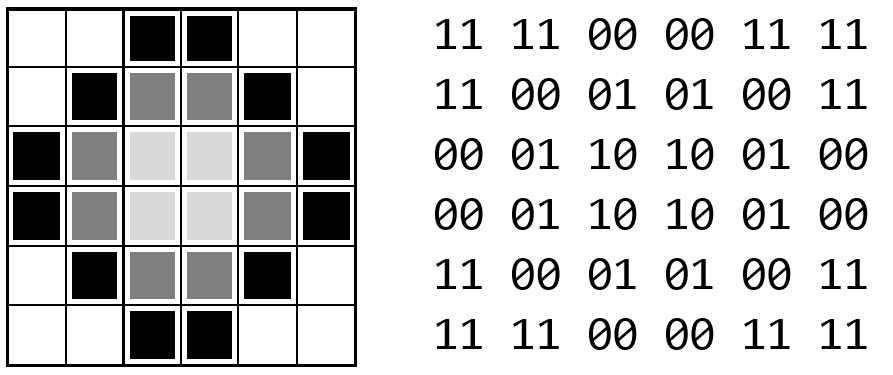
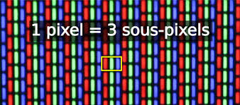
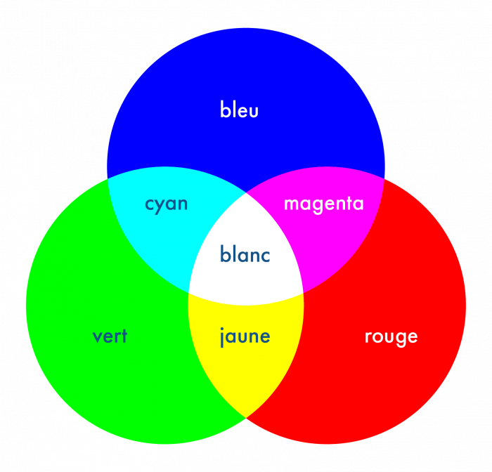

class: center, middle # Le traitement de l'information ## Le codage des images <img height="350px" src="img/data_processing.png"> --- ## Les images en noir et blanc Fonctionnement de base : * Une image est représentée par un tableau à deux dimensions * Chaque carré de ce tableau peut contenir 1 (blanc) ou 0 (noir) * Le nombre de carrés (la taille du tableau) influe sur la définition de l'image (HD, full HD, etc.) <div style="margin-top: 50px;"> <p></p> </div> --- ## Les images en noir et blanc Et si l'on souhaite du "plus ou moins noir" ou du "plus ou moins blanc" ? * Chaque carré peut contenir plusieurs bits (et plus seulement 0 ou 1) * La valeur est équivalente à l’intensité de lumière qui sera diffusée dans la led de ce pixel sur l’écran. <div style="margin-top: 50px; text-align: center;"> <p></p> </div> --- ## Les images en noir et blanc <div style="margin-top: 50px; text-align: center;"> <p></p> </div> --- ## Les images colorées * Composée d’un tableau à deux dimensions dont les valeurs sont un ensemble de 3 nombres allant de 0 à 255. * Chacun de ces nombres représente l’intensité de lumière à émettre sur une led rouge, verte, bleue (RVB ou RGB en anglais). * En adéquation avec la théorie de la lumière (synthèse additive), ces 3 sous-pixels formeront la couleur du pixel. <div style="margin-top: 50px; text-align: center;"> <p></p> <p></p> </div> --- ## Les images colorées Souvent sur le web, au lieu d’expliciter les 3 valeurs, la couleur est explicité en un nombre hexadécimal. Exemple #9A547F → 9A, 54, 7F → les 3 valeurs notées en hexadécimal. * `9A` donne `1001 1010` en base 2 et `154` en base 10 * `54` donne `0101 0100` en base 2 et `84` en base 10 * `7F`donne `0111 1111` en base 2 et `127` en base 10 Interprétation : * 154 / 255 : moyennement rouge (mais un peu plus que le bleu) * 84 / 255 : peu de vert * 127 / 255 : moyennement bleu → **on se situe plutôt proche du magenta** <div style="background-color:#9a547f; height:100px; width:100px"> </div> --- ## Exercices * `#957A2B`. Que vaut cette couleur notée en * hexadécimal ? * décimal ? * binaire ? * Combien d’octets sont nécessaire à la l’écriture d’un pixel ? * Pour la conversion en binaire quel modèle de conversion avez-vous utilisé ? Pourquoi celui-ci par rapport aux autres ? * Si ces 3 valeurs étaient encodées selon la norme IEEE 754, combien d’octets seraient nécessaires ? * Comment serait écrite la valeur Rouge selon la norme IEEE754 ? * S’agit-il d’un traitement formel ou informel de l’information ? Expliquez pourquoi en illustrant vos propos d’exemples concrets. --- ## Sources des images * https://computerscience.chemeketa.edu/cs160Reader/_images/face.png * https://i.pinimg.com/originals/ee/33/57/ee3357914e2a2fc617d3e2fdee1c7d93.png